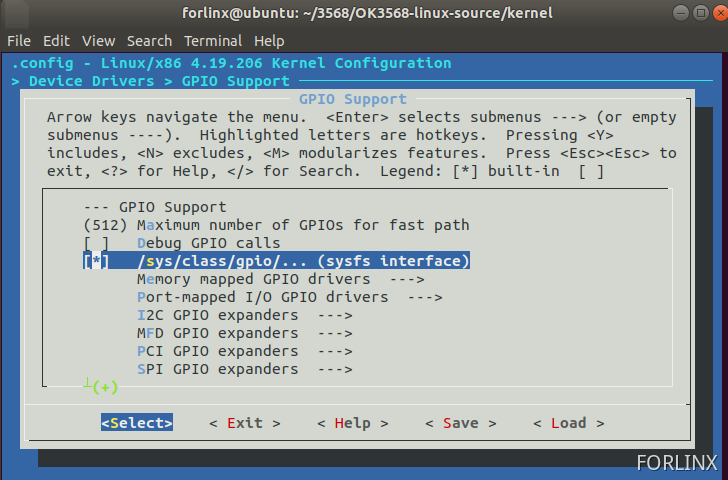
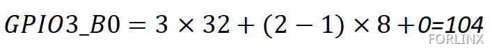
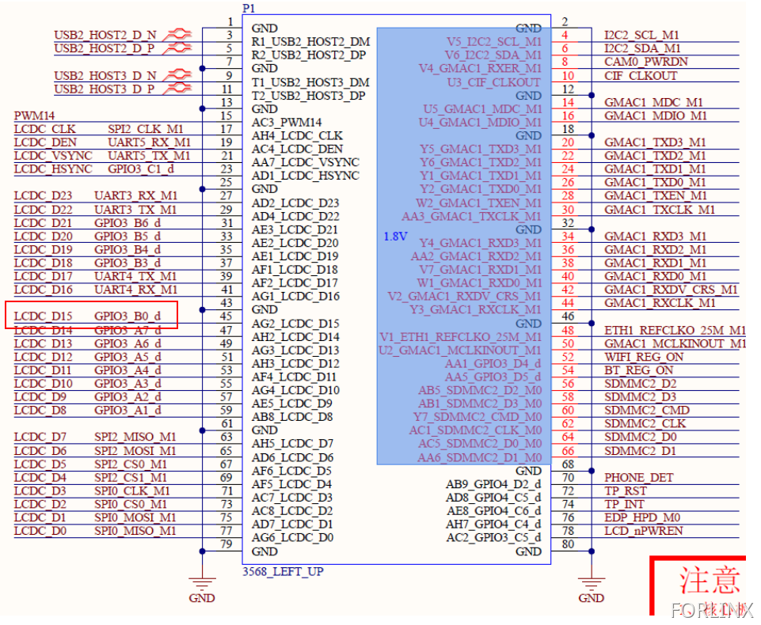
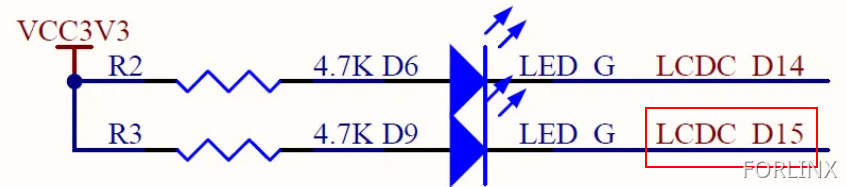
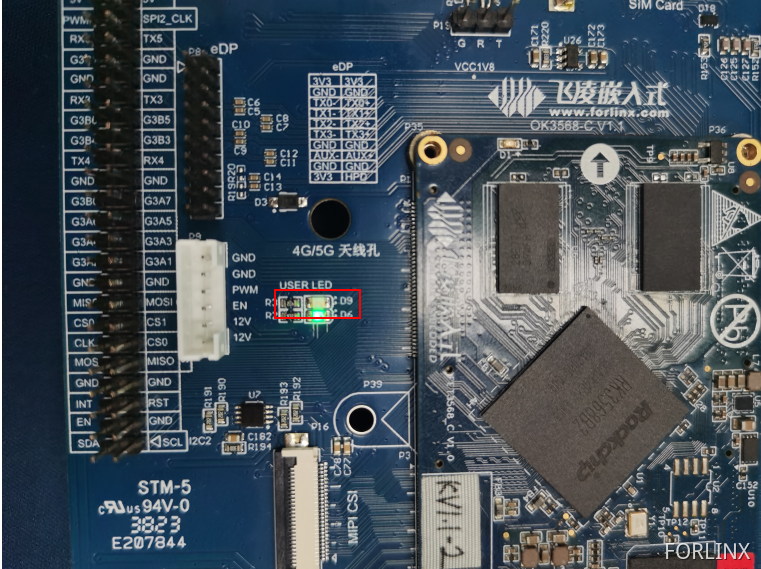
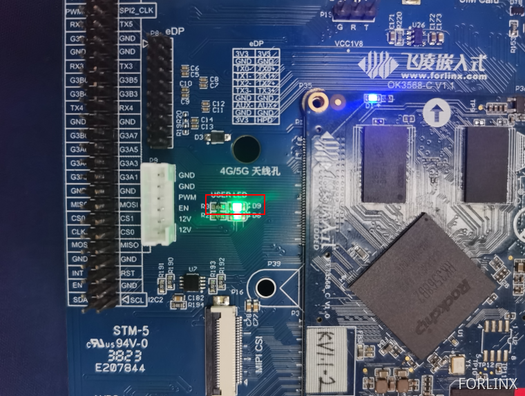

OK3568 4.19.206 Buildroot Controlling GPIO via sysfs
1. Introduction to sysfs
sysfs is a virtual file system provided by the Linux kernel, which is used to offer information about system hardware devices and drivers to the user space It is presented in the form of files and directories. You can interact with and configure system hardware by reading and writing these files.
sysfs is mounted under the /sys directory of the root file system. Its main purpose is to provide a unified interface, allowing user - space programs to conveniently obtain and manage information about system hardware devices. It represents system hardware devices and drivers as a hierarchical directory tree, where each device and driver has corresponding directories and files. Each device has a unique directory, and the directory name is the device’s unique identifier.
2. Experiment on Controlling GPIO with sysfs
2.1 Development Environment Confirmation
First, check if there is a /sys/class/gpio folder in the development board system.
[root@ok3568:/sys/class]# ls
GobiQMI drm misc rfkill tty
android_usb extcon mmc_host rtc ubi
ata_device gpio mpp_class scsi_device udc
ata_link graphics mtd scsi_disk usbmon
ata_port hidraw net scsi_host vc
backlight hwmon nvme sound video4linux
bdi i2c-adapter nvme-subsystem spi_host vtconsole
block i2c-dev pci_bus spi_master wakeup
bluetooth ieee80211 phy spi_transport watchdog
bsg input power_supply spidev zram-control
devcoredump iommu pps tee
devfreq leds ptp thermal
devfreq-event mdio_bus pwm tpm
dma mem regulator tpmrm
If this folder does not exist in the system, find >-Device Drivers>-GPIO Support in the kernel configuration and select to compile /sys/class/gpio/… (sysfs interface) into the kernel.

2.1.1 Instructions for Using /sys/class/gpio
gpio_operation operates the mapping from the GPIO of the IO port to the file system through the /sys/ file interface.
The directory for controlling GPIO is located at /sys/class/gpio.
The /sys/class/gpio/export file is used to notify the system of the GPIO pin number that needs to be exported for control.
The /sys/class/gpio/unexport file is used to notify the system to cancel the export.
The /sys/class/gpio/gpiochipX directory stores information about the GPIO registers in the system, including the starting number of the pins controlled by each register, the register name, and the total number of pins. This is the operation to export a pin.
The /sys/class/gpio/gpioX/direction file defines the input or output direction. You can define it as an output using the following command. The direction parameter accepts in, out, high, and low. Set the direction of high/low to output and set the value to the corresponding IO level at the same time.
The /sys/class/gpio/gpioX/value file represents the value of the port, which is either 1 or 0.
2.1.2 GPIO Selection and Hardware Principle
1）Pin Selection
Here, GPIO3_B0 is selected as the GPIO pin for this experiment.
The naming rule for GPIO is GPIOn_xy, where x has four forms: A, B, C, and D. In the process of calculating the GPIO number, A corresponds to 1, B corresponds to 2, C corresponds to 3, and D corresponds to 4.
The calculation formula is as follows:
Take GPIO3_B0 as an example to calculate its GPIO number.

2）Hardware Principle

You can see that GPIO3_B0 can control the D9 diode. When GPIO3_B0 is at a high level, D9 is cut off and does not emit light. When GPIO3_B0 is at a low level, D9 is turned on and emits light.
2.1.3 Operating GPIO via Commands in the Super Terminal
[root@ok3568:/]# cd /sys/class/gpio/
[root@ok3568:/sys/class/gpio]# ls
export gpio154 gpiochip128 gpiochip511 gpiochip96
gpio104 gpiochip0 gpiochip32 gpiochip64 unexport
[root@ok3568:/sys/class/gpio]# echo 104 > export //Export gpio to expose interface
[root@ok3568:/sys/class/gpio]# cd gpio104/
[root@ok3568:/sys/devices/platform/fe760000.gpio/gpiochip3/gpio/gpio104]# echo out > direction //Set to output
[root@ok3568:/sys/devices/platform/fe760000.gpio/gpiochip3/gpio/gpio104]# echo 1 > value //Set IO to output high level
[root@ok3568:/sys/devices/platform/fe760000.gpio/gpiochip3/gpio/gpio104]# cat value
1
When GPIO3_B0 outputs a high level, D9 does not light up.

[root@ok3568:/sys/devices/platform/fe760000.gpio/gpiochip3/gpio/gpio104]# echo 0 > value //Set IO to output low level
[root@ok3568:/sys/devices/platform/fe760000.gpio/gpiochip3/gpio/gpio104]# cat value
0
When GPIO3_B0 outputs a low level, D9 lights up.

[root@ok3568:/sys/devices/platform/fe760000.gpio/gpiochip3/gpio/gpio104]# echo in > direction //Set as input state
[root@ok3568:/sys/devices/platform/fe760000.gpio/gpiochip3/gpio/gpio104]# cat value //View pin status
0
1.2.5 Writing a C Program to Control GPIO
You can also set macros to control the sys file interface through a C program, thereby achieving GPIO control. The following takes GPIO3_B0 as an example to control GPIO. Here is the program source code.
Source code for the GPIO output experiment:
//包含头文件
#include <stdlib.h>
#include <stdio.h>
#include <string.h>
#include <unistd.h>
#include <fcntl.h> //define O_WRONLY and O_RDONLY
//下面将sys下的文件定义成宏
#define SYSFS_GPIO_EXPORT "/sys/class/gpio/export" //To define the notification system, it is necessary to export the file of the GPIO pin number of the control.
#define SYSFS_GPIO_RST_PIN_VAL "104" //Define the pin encoding.
#define SYSFS_GPIO_RST_DIR "/sys/class/gpio/gpio104/direction" //Define a file for the input/output direction.
#define SYSFS_GPIO_RST_DIR_VAL "out"
#define SYSFS_GPIO_RST_VAL "/sys/class/gpio/gpio104/value"
#define SYSFS_GPIO_RST_VAL_H "1" //High level
#define SYSFS_GPIO_RST_VAL_L "0" //Low level
int fd; //File descriptor
int main(int argc,char **argv)
{
fd = open("/sys/class/gpio/export", O_WRONLY); //Open the file in write-only mode.
if(fd == -1) //If the “export” file fails to open successfully, report an error in the printed information.
{
printf("ERR: Radio hard reset pin open error.\n");
return EXIT_FAILURE;
}
printf("open sys/gpio/class/gpio/export\r\n");
write(fd, SYSFS_GPIO_RST_PIN_VAL ,sizeof(SYSFS_GPIO_RST_PIN_VAL)); //echo 104 > export
close(fd);
fd = open(SYSFS_GPIO_RST_DIR, O_WRONLY); //Set the port direction/sys/class/gpio/gpio104#
if(fd == -1) //An error will be reported if opening the “direction” file in write-only mode fails.
{
printf("ERR: Radio hard reset pin direction open error.\n");
return EXIT_FAILURE;
}
printf("echo out direction\r\n");
write(fd, SYSFS_GPIO_RST_DIR_VAL, sizeof(SYSFS_GPIO_RST_DIR_VAL)); //echo out > direction
close(fd);
fd = open(SYSFS_GPIO_RST_VAL, O_RDWR); //Open the file in read-write mode./sys/class/gpio/gpio104/value
if(fd == -1)
{
printf("ERR: Radio hard reset pin value open error.\n");
return EXIT_FAILURE;
}
while(1)
{
write(fd, SYSFS_GPIO_RST_VAL_H, sizeof(SYSFS_GPIO_RST_VAL_H)); //Set the GPIO to a high level. At this time, it can be observed on the development board that D9 goes out.
printf("echo 1 > gpio104\r\n");
sleep(1); //Delay
write(fd, SYSFS_GPIO_RST_VAL_L, sizeof(SYSFS_GPIO_RST_VAL_L)); //Set the GPIO to a low level. At this time, it can be observed on the development board that D9 lights up.
printf("echo 0 > gpio104\r\n");
sleep(1);
}
close(fd);
//loop
return 0;
}
Execute the following instructions in the Ubuntu terminal, and then transfer the generated executable file to the development board.
forlinx@ubuntu:~/work/GPIO/gpiotest-write(gpio3_b0)$ export PATH=$PATH:/home/forlinx/3568/OK3568-linux-source/prebuilts/gcc/linux-x86/aarch64/gcc-linaro-6.3.1-2017.05-x86_64_aarch64-linux-gnu/bin //Set environment variables and modify them according to the actual situation
forlinx@ubuntu:~/work/GPIO/gpiotest-write(gpio3_b0)$ aarch64-linux-gnu-gcc -o gpiowritetest gpiotest-write.c //Compile
forlinx@ubuntu:~/work/GPIO/gpiotest-write(gpio3_b0)$ ls -l gpiowritetest //View the generated program
-rwxrwxr-x 1 forlinx forlinx 14320 Jul 28 23:12 gpiowritetest
Give the program executable permission and run it in the serial port debugging tool of the development board.
[root@ok3568:/home]# ls -l gpiowritetest
-rw-r--r-- 1 root root 14320 Jul 29 14:16 gpiowritetest
[root@ok3568:/home]# chmod 777 gpiowritetest
[root@ok3568:/home]# ./gpiowritetest
open sys/gpio/class/gpio/export
echo out direction
echo 1 > gpio104
echo 0 > gpio104
echo 1 > gpio104
echo 0 > gpio104
echo 1 > gpio104
echo 0 > gpio104
At this time, the D9 diode on the development board can be seen flashing.
Source code for the GPIO input experiment:
#include <stdlib.h>
#include <stdio.h>
#include <string.h>
#include <unistd.h>
#include <fcntl.h> //define O_WRONLY and O_RDONLY
#define SYSFS_GPIO_EXPORT "/sys/class/gpio/export"
#define SYSFS_GPIO_RST_PIN_VAL "101" //gpio3_A5
#define SYSFS_GPIO_RST_DIR "/sys/class/gpio/gpio101/direction"
#define SYSFS_GPIO_RST_DIR_VAL "in"
#define SYSFS_GPIO_RST_VAL "/sys/class/gpio/gpio101/value"
int fd;
int ret;
int main(int argc,char **argv)
{
unsigned char a;
fd = open("/sys/class/gpio/export", O_WRONLY);
if(fd == -1)
{
printf("ERR: Radio hard reset pin open error.\n");
return EXIT_FAILURE;
}
printf("open sys/gpio/class/gpio/export\r\n");
write(fd, SYSFS_GPIO_RST_PIN_VAL ,sizeof(SYSFS_GPIO_RST_PIN_VAL)); //echo 101 > export
close(fd);
//设置端口方向/sys/class/gpio/gpio137# echo out > direction
fd = open(SYSFS_GPIO_RST_DIR, O_WRONLY);
if(fd == -1)
{
printf("ERR: Radio hard reset pin direction open error.\n");
return EXIT_FAILURE;
}
printf("echo out direction\r\n");
write(fd, SYSFS_GPIO_RST_DIR_VAL, sizeof(SYSFS_GPIO_RST_DIR_VAL)); //echo out > direction //Set to input
close(fd);
while(1)
{
fd = open(SYSFS_GPIO_RST_VAL, O_RDWR);
if(fd == -1)
{
printf("ERR: Radio hard reset pin value open error.\n");
return EXIT_FAILURE;
}
ret = read(fd, &a, sizeof(a)); //Assign/sys/class/gpio/gpio101/value as ret
if(ret ==-1)
{
printf("read data error\n");
}
printf("%c\r\n",a);
close(fd);
sleep(1);
}
close(fd);
//loop
return 0;
}
Execute the following instructions in the Ubuntu terminal, and then transfer the generated executable file to the development board.
forlinx@ubuntu:~/work/GPIO/gpiotest-read(gpio3_a5)$ export PATH=$PATH:/home/forlinx/3568/OK3568-linux-source/prebuilts/gcc/linux-x86/aarch64/gcc-linaro-6.3.1-2017.05-x86_64_aarch64-linux-gnu/bin/ //Set environment variables and modify them according to the actual situation
forlinx@ubuntu:~/work/GPIO/gpiotest-read(gpio3_a5)$ aarch64-linux-gnu-gcc -o gpioreadtest gpiotest-read.c //Compile
forlinx@ubuntu:~/work/GPIO/gpiotest-read(gpio3_a5)$ ls -l gpioreadtest //View the generated program
-rwxrwxr-x 1 forlinx forlinx 14408 Jul 28 23:21 gpioreadtest
Give the program executable permission and run it in the serial port debugging tool of the development board.
[root@ok3568:/home]# ls -l gpioreadtest
-rw-r--r-- 1 root root 14408 Jul 29 14:28 gpioreadtest
[root@ok3568:/home]# chmod 777 gpioreadtest
[root@ok3568:/home]# ./gpioreadtest
open sys/gpio/class/gpio/export
echo out direction
0
0
1
1
0
1
0
0
When the value of GPIO3_A5 changes, the read value will change accordingly.